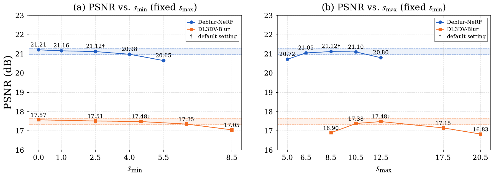
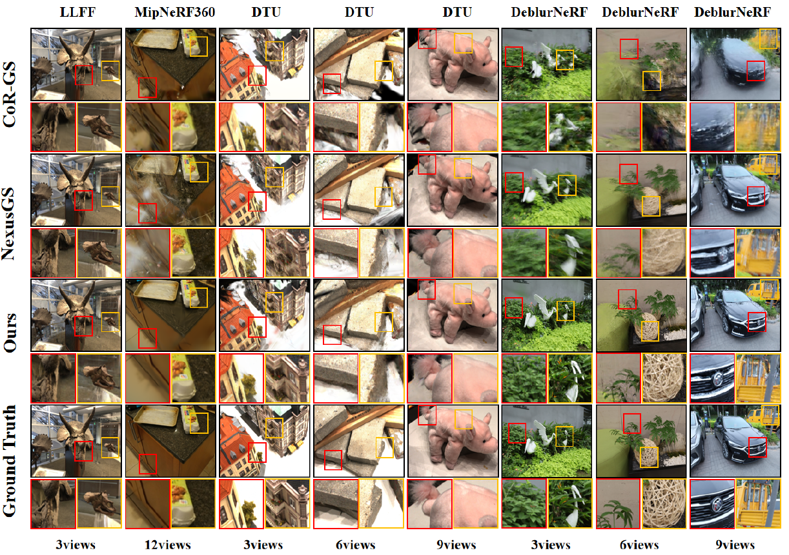
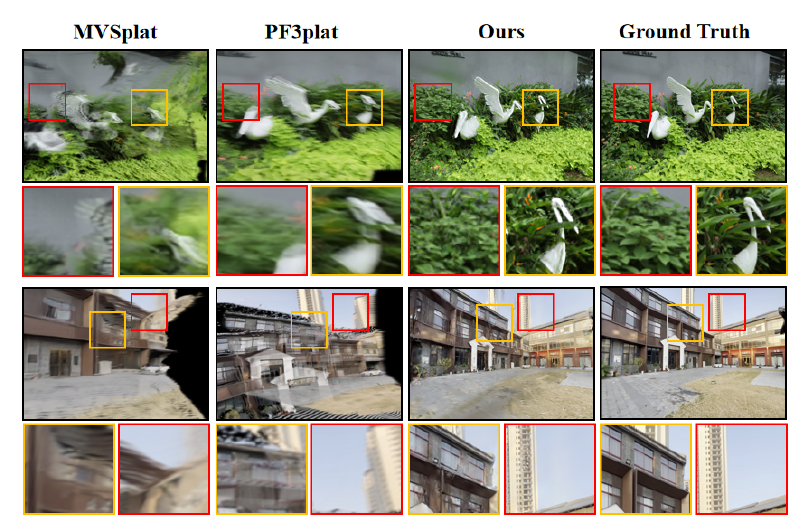
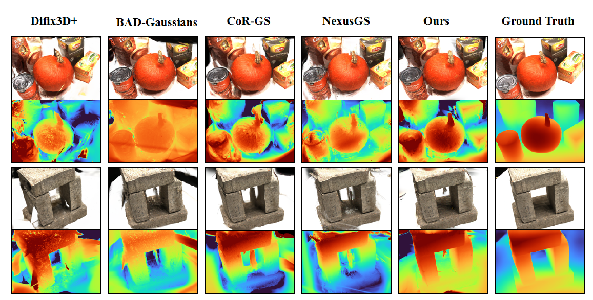
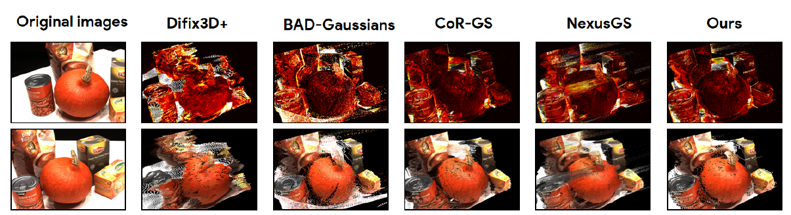
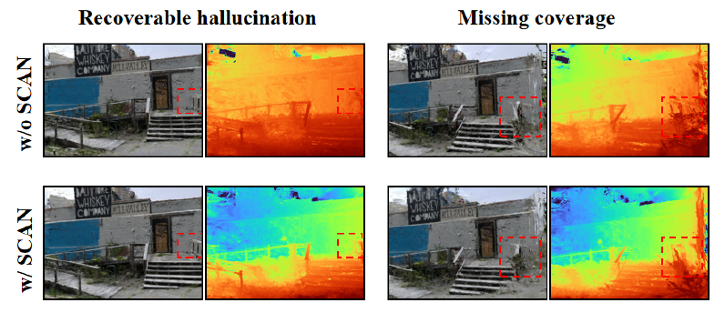
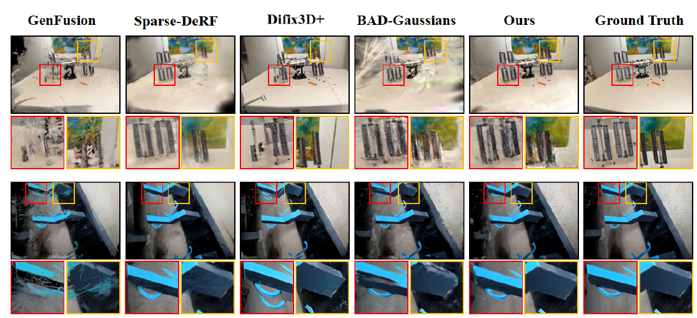

Thank you to the reviewers and editors.
We are deeply grateful to the two reviewers, the Associate Editor, the Senior Area Editor, and the Editor-in-Chief for the time and care they have invested in this manuscript. The comments were detailed, technically sharp, and—most importantly—aimed squarely at the parts of our work that needed to be sharper. Several of the most consequential changes in this revision exist only because the reviewers pointed at exactly the right gap.
We have addressed every concern point-by-point in the cards below. Where a comment surfaced an empirical hole, we ran new experiments (naive-cascade and unified-Difix3D+ baselines, CoR-GS / NexusGS on LLFF / Mip-NeRF 360 / DTU, MVSplat / PF3plat under compound degradation, Smartphone-Dataset handheld captures); where it surfaced a conceptual one, we made the technical claim explicit at the gradient level (Eq. 2.3.1–2.3.3) or through a three-constraint fixed-point analysis (R2.1). Modifications in the manuscript are highlighted in red, and this companion page mirrors the updated evidence with side-by-side video comparisons.
We hope the reviewers will find that the revised manuscript responds to their comments substantively and in good faith. Any remaining unclarity is on us, not on the original critique.
General Response
We sincerely thank the reviewers and Editor for their thorough feedback. The revised submission has been substantially strengthened: every concern is addressed point-by-point, with new experiments and analyses added throughout the manuscript. All modifications are highlighted in red.
What this rebuttal contributes
- Methodological clarification (R1, R2): CoherentGS resolves a coupled sparse-and-blurry failure mode that no prior work tackles in isolation. We empirically refute "naive combination" via two cascaded pipelines and a single-network retrained baseline, both of which underperform the dual-prior framework.
- Empirical breadth (R1.3 / R1.4): new comparisons against sparse-view methods (CoR-GS, NexusGS) on LLFF / Mip-NeRF360 / DTU, and against feed-forward methods (MVSplat, PF3plat) on Deblur-NeRF-Real / DL3DV-Blur.
- Geometric fidelity (R2.2): depth accuracy on DTU against structured-light GT, multi-view reprojection error, and a SACN failure-mode visualization that honestly bounds the mechanism's scope.
- Real-world scalability (R2.5): evaluation on the Smartphone Dataset (Seiskari et al.) — genuine handheld captures with non-uniform blur and pose noise.
- Cost analysis (R2.6): per-component training-time breakdown on DL3DV-Blur showing the diffusion prior contributes 18.9% (every-200-iter invocation), and an unchanged 0.6 min inference because both priors are training-time only.
Relation to Prior T-CSVT Publications
Among recent IEEE T-CSVT publications, the five most closely related to our work span the three axes that define our problem: sparse-view 3D reconstruction (GeoRGS, Depth-Guided Robust Point Cloud Fusion NeRF), motion blur and blur-resistant capture (the 2D deblurring benchmark MC-Blur and the event-camera-based SweepEvGS), and the 3DGS landscape (the recent survey, which lists reconstruction from limited or degraded inputs as an open direction without a concrete solution).
CoherentGS is distinct from each: the geometric cues exploited by the sparse-view works are themselves corrupted once motion blur is introduced; MC-Blur operates purely in 2D and does not enforce multi-view consistency; SweepEvGS resolves blur on the hardware side via specialized sensors unavailable in commodity RGB capture. To our knowledge, CoherentGS is the first 3DGS framework that explicitly resolves the coupled sparse-and-blurry failure mode—in which each degradation invalidates the cues required to address the other—through three coordinated mechanisms not present in the cited works:
- (a) a deblurring prior tied to an SE(3) exposure-trajectory model;
- (b) online diffusion distillation with stop-gradient supervision in place of offline post-processing;
- (c) the SACN viewpoint policy that filters generatively-unreliable virtual views before they can corrupt optimization.
A condensed version of this discussion has been incorporated into Sec. II of the revised manuscript.
Associate & Senior Area Editors
Novelty & the coupled degradation problem
1 · The coupled degradation is a distinct research problem
- Sparse views break deblurring: motion-deblurring methods rely on dense multi-view geometric constraints to disentangle camera motion from scene; under sparse views these constraints vanish and motion estimation becomes ill-posed.
- Motion blur breaks sparse-view reconstruction: sparse-view methods (e.g. Difix3D+, GSFixer) assume sharp inputs; blur erases the high-frequency cues used for cross-view alignment and the diffusion model misinterprets blur as texture.
2 · Naive combination of existing methods fails — empirical evidence
Table A. Naive sequential pipelines vs. CoherentGS on Deblur-NeRF synthetic, 3-view. Both Deblur→Diffusion and Diffusion→Deblur cascades fall well short of the joint design.
(a) Novel View Synthesis
| Method | PSNR↑ | SSIM↑ | LPIPS↓ |
|---|---|---|---|
| BAD-Gaussians | 19.58 | 0.555 | 0.274 |
| Difix3D+ | 18.43 | 0.504 | 0.307 |
| Pipeline A (Deblur→Diff.) | 17.43 | 0.463 | 0.349 |
| Pipeline B (Diff.→Deblur) | 18.63 | 0.518 | 0.253 |
| CoherentGS | 21.12 | 0.671 | 0.195 |
(b) Deblurring View Synthesis
| Method | PSNR↑ | SSIM↑ | LPIPS↓ |
|---|---|---|---|
| BAD-Gaussians | 20.72 | 0.566 | 0.253 |
| Difix3D+ | 21.28 | 0.617 | 0.248 |
| Pipeline A (Deblur→Diff.) | 19.71 | 0.517 | 0.187 |
| Pipeline B (Diff.→Deblur) | 21.10 | 0.635 | 0.193 |
| CoherentGS | 27.81 | 0.874 | 0.095 |
In Pipeline A, BAD-Gaussians produces a degraded initial reconstruction under sparse views (fragmented geometry and failed motion estimation), which Difix3D+ cannot recover from. In Pipeline B, Difix3D+ hallucinates blurred texture as scene content, which the subsequent deblurring stage cannot undo.
3 · Novel technical components beyond individual priors
Table B. Novel technical components in CoherentGS and their distinction from prior work.
| Component | Prior Work | Our Novelty |
|---|---|---|
| Scene Adaptive Consistency Norm. (Sec. IV-D) | Linear / ellipse sampling for trajectory (TrajectoryCrafter, GSFixer) | First consistency-guided exploration that quantifies diffusion reliability via band-pass filtering |
| Feature-space Deblurring Distillation (Sec. IV-B) | SparseDeRF: pixel-level deblur supervision | Perceptual-space distillation that avoids enforcing pixel alignment with inconsistent pseudo-targets |
| Diffusion-as-Online-Supervision (Sec. IV-C) | Difix3D+: offline post-processing with image replacement | Score-distillation-inspired online gradient with stop-gradient, preventing diffusion bias |
| Warm-up & Joint Optimization (Sec. IV-E) | No prior work addresses injection timing of generative priors under blur | Empirically validated warm-up that prevents diffusion from solidifying blur as texture |
4 · Supplementary baseline: end-to-end retrained Difix3D+
Before arriving at the dual-prior design we explored a single end-to-end model handling both de-artifact and deblurring. We constructed a blurry–sharp paired training set following Difix3D+'s data protocol and fine-tuned with the official training recipe (SD-Turbo backbone, reference-conditioned attention, identical schedule, τ=200).
Table C. Unified Difix3D+ retrained on blurry–sharp paired data, Deblur-NeRF synthetic, 3-view.
(a) Novel View Synthesis
| Method | PSNR↑ | SSIM↑ | LPIPS↓ |
|---|---|---|---|
| Difix3D+ (original) | 18.43 | 0.504 | 0.307 |
| Difix3D+ (retrained w/ blur) | 16.89 | 0.485 | 0.375 |
| CoherentGS | 21.12 | 0.671 | 0.195 |
(b) Deblurring View Synthesis
| Method | PSNR↑ | SSIM↑ | LPIPS↓ |
|---|---|---|---|
| Difix3D+ (original) | 19.58 | 0.562 | 0.249 |
| Difix3D+ (retrained w/ blur) | 19.64 | 0.564 | 0.256 |
| CoherentGS | 21.50 | 0.594 | 0.232 |
The retrained single model still falls short. We attribute this to a fundamental conflict of inductive biases: deblurring demands faithful recovery of high-frequency details under a physical motion model, whereas geometric completion requires plausible hallucination in unobserved regions. A single network compromises on both fronts; the dual design avoids this conflict by assigning each task to a specialized model coordinated through joint optimization.
SACN threshold sensitivity
Table D. Ablation on smin and smax under 3-view. Default settings marked with †. PSNR varies by less than ~0.3 dB across moderate neighborhoods.
(a) Deblur-NeRF (default 2.5 / 8.5)
| smin | smax | PSNR↑ | SSIM↑ | LPIPS↓ | # Views |
|---|---|---|---|---|---|
| Fixing smax=8.5 | |||||
| 0.0 | 8.5 | 21.21 | 0.678 | 0.186 | 50.2 |
| 1.0 | 8.5 | 21.16 | 0.674 | 0.191 | 47.0 |
| 2.5† | 8.5† | 21.12 | 0.671 | 0.195 | 39.0 |
| 4.0 | 8.5 | 20.98 | 0.662 | 0.208 | 21.8 |
| 5.5 | 8.5 | 20.65 | 0.645 | 0.225 | 12.2 |
| Fixing smin=2.5 | |||||
| 2.5 | 5.0 | 20.72 | 0.651 | 0.218 | 26.6 |
| 2.5 | 6.5 | 21.05 | 0.676 | 0.192 | 35.4 |
| 2.5 | 10.5 | 21.10 | 0.668 | 0.201 | 41.4 |
| 2.5 | 12.5 | 20.80 | 0.654 | 0.212 | 43.2 |
(b) DL3DV-Blur (default 4.5 / 14.5)
| smin | smax | PSNR↑ | SSIM↑ | LPIPS↓ | # Views |
|---|---|---|---|---|---|
| Fixing smax=14.5 | |||||
| 0.0 | 14.5 | 17.57 | 0.642 | 0.380 | 37.6 |
| 2.5 | 14.5 | 17.51 | 0.638 | 0.384 | 34.0 |
| 4.5† | 14.5† | 17.48 | 0.639 | 0.386 | 33.3 |
| 6.5 | 14.5 | 17.35 | 0.632 | 0.394 | 26.0 |
| 8.5 | 14.5 | 17.05 | 0.618 | 0.410 | 20.5 |
| Fixing smin=4.5 | |||||
| 4.5 | 9.0 | 16.90 | 0.618 | 0.415 | 12.5 |
| 4.5 | 11.5 | 17.38 | 0.635 | 0.392 | 20.0 |
| 4.5 | 17.5 | 17.15 | 0.620 | 0.405 | 36.4 |
| 4.5 | 20.5 | 16.83 | 0.611 | 0.420 | 39.0 |

We note that the default setting is not the single best PSNR point but a robust trade-off between reconstruction quality and the number of accepted candidates. For example, on Deblur-NeRF setting smin=0 raises PSNR by only 0.09 dB (21.12 → 21.21) while increasing accepted views by 28.7%—the additional views are largely near-duplicate or weakly informative, bringing marginal metric gain at higher optimization cost. Degradation only appears at extreme settings that effectively disable one side of the filter.
Sparse-view comparisons (LLFF / Mip-NeRF360 / DTU)
Table E. LLFF (3-view) and Mip-NeRF 360 (12-view) novel view synthesis.
(a) LLFF (3 views)
| Method | PSNR↑ | SSIM↑ | LPIPS↓ |
|---|---|---|---|
| CoR-GS | 20.17 | 0.703 | 0.202 |
| NexusGS | 20.24 | 0.721 | 0.190 |
| CoherentGS | 20.68 | 0.745 | 0.181 |
(b) Mip-NeRF 360 (12 views)
| Method | PSNR↑ | SSIM↑ | LPIPS↓ |
|---|---|---|---|
| CoR-GS | 19.59 | 0.580 | 0.371 |
| NexusGS | 19.31 | 0.561 | 0.344 |
| CoherentGS | 19.80 | 0.601 | 0.270 |
Table F. DTU novel view synthesis, 3-/6-/9-view.
| Method | PSNR↑ | SSIM↑ | LPIPS↓ | |||||||||
|---|---|---|---|---|---|---|---|---|---|---|---|---|
| 3 | 6 | 9 | Avg | 3 | 6 | 9 | Avg | 3 | 6 | 9 | Avg | |
| CoR-GS | 19.46 | 24.05 | 26.94 | 23.48 | 0.858 | 0.916 | 0.945 | 0.906 | 0.120 | 0.072 | 0.030 | 0.074 |
| NexusGS | 19.31 | 23.91 | 26.82 | 23.34 | 0.812 | 0.910 | 0.933 | 0.885 | 0.120 | 0.068 | 0.040 | 0.076 |
| CoherentGS | 20.06 | 24.58 | 27.29 | 23.97 | 0.863 | 0.922 | 0.956 | 0.913 | 0.10 | 0.062 | 0.03 | 0.064 |
Table G. DeblurNeRF-Real novel view synthesis, 3-/6-/9-view. CoherentGS retains its lead on the more difficult real-blurry data.
| Method | PSNR↑ | SSIM↑ | LPIPS↓ | |||||||||
|---|---|---|---|---|---|---|---|---|---|---|---|---|
| 3 | 6 | 9 | Avg | 3 | 6 | 9 | Avg | 3 | 6 | 9 | Avg | |
| CoR-GS | 13.62 | 16.32 | 21.73 | 17.22 | 0.380 | 0.584 | 0.820 | 0.595 | 0.555 | 0.416 | 0.313 | 0.428 |
| NexusGS | 19.71 | 21.16 | 21.28 | 20.71 | 0.502 | 0.658 | 0.659 | 0.606 | 0.441 | 0.360 | 0.322 | 0.374 |
| CoherentGS | 19.98 | 22.01 | 23.44 | 21.67 | 0.575 | 0.681 | 0.747 | 0.668 | 0.297 | 0.201 | 0.167 | 0.221 |
On Real 3-view we marginally edge NexusGS by 0.27 dB PSNR—under extreme sparsity its epipolar-depth prior remains stable on certain textureless regions—yet we consistently outperform on 6/9-view (+0.85 / +2.16 dB), in LPIPS at every level (−0.144 at 3-view), and in geometric accuracy (DTU AbsRel −0.030, see R2.2).

Video Sliders drag to compare
Comparison with feed-forward 3DGS
Table H. Quantitative comparison with feed-forward methods under the 3-view setting.
(a) Deblur-NeRF Real
| Method | PSNR↑ | SSIM↑ | LPIPS↓ | Type |
|---|---|---|---|---|
| MVSplat | 11.62 | 0.232 | 0.656 | Feed-fwd. |
| PF3plat | 15.71 | 0.462 | 0.471 | Feed-fwd. |
| BAD-Gaussians | 18.57 | 0.495 | 0.337 | Per-scene |
| Difix3D+ | 18.06 | 0.533 | 0.415 | Per-scene |
| CoherentGS | 19.57 | 0.575 | 0.297 | Per-scene |
(b) DL3DV-Blur
| Method | PSNR↑ | SSIM↑ | LPIPS↓ | Type |
|---|---|---|---|---|
| MVSplat | 12.58 | 0.294 | 0.556 | Feed-fwd. |
| PF3plat | 13.12 | 0.315 | 0.517 | Feed-fwd. |
| BAD-Gaussians | 15.08 | 0.501 | 0.466 | Per-scene |
| Difix3D+ | 14.36 | 0.492 | 0.404 | Per-scene |
| CoherentGS | 17.48 | 0.639 | 0.368 | Per-scene |

We note this is not an argument that per-scene optimization is universally superior. For clean sparse-view inputs, feed-forward approaches offer compelling speed and generalization. The two paradigms have different strengths—per-scene optimization with explicit physical modeling is better suited when the degradation is complex, structured, and potentially out-of-distribution.
What CoherentGS itself learns vs. inherits from external priors
CoherentGS is a per-scene optimizer. Its only trainable parameters are the 3D Gaussian primitives and the per-frame exposure trajectories. Both external networks are frozen and not loaded at test time—they supply training-time supervisory signals only.
What is learned internally is the unique 3D state that simultaneously satisfies three heterogeneous constraints:
- (i) reproducibility of blurry multi-view observations under exposure-integrated rendering — \(\mathcal{L}_{\mathrm{blurry}}\), Eq. (8);
- (ii) perceptual consistency of midpoint-rendered sharp images with VGG features of the deblurring pseudo-target — \(\mathcal{L}_{\mathrm{pr}}\), Eq. (10);
- (iii) geometric agreement with the diffusion model's repaired renderings at explored viewpoints — \(\mathcal{L}_{\mathrm{geo}}\), Eq. (12).
No individual external model has access to all three signals, and no subset is sufficient under sparse-and-blurry input: (ii) alone propagates single-image deblurring artifacts, (iii) alone hallucinates content, (i) alone is severely ill-posed (baseline 3DGS drops to 19.58 PSNR on 3-view synthetic). The internal optimization is the only mechanism that reconciles all three into a self-consistent 3D state. This fixed point is what CoherentGS "learns".
Component ablation (Sec. V, Table IV in manuscript) — disabling either prior degrades reconstruction substantially, confirming each is non-redundant.
| CoherentGS | PSNR↑ | SSIM↑ | LPIPS↓ |
|---|---|---|---|
| baseline | 19.58 | 0.555 | 0.274 |
| +Geometric Priors | 20.59 | 0.615 | 0.218 |
| +Deblurring Priors | 20.83 | 0.647 | 0.207 |
| +Depth Loss (full) | 21.12 | 0.671 | 0.195 |
A capacity that exists only inside CoherentGS — the SACN exploration policy. The decision of which novel viewpoints to supervise the diffusion prior against (Sec. IV-D) is computed online from the current 3DGS state and the diffusion-aided reliability score. It is not the output of any pre-trained model—no external prior produces such a viewpoint sequence.
Trajectory ablation (Sec. V, Table VI in manuscript).
| Trajectory | PSNR↑ | SSIM↑ | LPIPS↓ |
|---|---|---|---|
| Linear interpolation | 17.24 | 0.575 | 0.372 |
| Ellipse sampling | 15.64 | 0.550 | 0.428 |
| SACN | 17.48 | 0.639 | 0.368 |
Geometric accuracy & failure-mode analysis
(1) Depth accuracy on DTU against structured-light GT
Table I. CoR-GS and NexusGS use explicit geometric regularizers; this comparison directly tests whether diffusion guidance sacrifices geometry for perceptual quality. CoherentGS wins on AbsRel, RMSE, and δ<1.25 across 3-/6-/9-view.
| Method | AbsRel↓ | RMSE↓ | δ<1.25 ↑ | ||||||
|---|---|---|---|---|---|---|---|---|---|
| 3 | 6 | 9 | 3 | 6 | 9 | 3 | 6 | 9 | |
| BAD-Gaussians | 0.802 | 0.754 | 0.688 | 9.35 | 8.96 | 8.41 | 0.497 | 0.512 | 0.547 |
| CoR-GS | 0.561 | 0.552 | 0.535 | 7.12 | 6.94 | 6.65 | 0.638 | 0.642 | 0.651 |
| NexusGS | 0.579 | 0.561 | 0.548 | 7.24 | 7.02 | 6.83 | 0.618 | 0.625 | 0.637 |
| Difix3D+ | 0.715 | 0.688 | 0.613 | 9.08 | 8.66 | 8.23 | 0.510 | 0.537 | 0.552 |
| CoherentGS | 0.549 | 0.542 | 0.531 | 7.04 | 6.78 | 6.52 | 0.641 | 0.648 | 0.660 |

(2) Multi-view depth-based reprojection error
Table J. Reprojection L1 error on DTU 3-view, averaged over training-view pairs. Lower indicates more geometrically coherent 3D reconstruction.
| Method | Reprojection L1 ↓ |
|---|---|
| BAD-Gaussians | 0.217 |
| CoR-GS | 0.114 |
| NexusGS | 0.154 |
| Difix3D+ | 0.182 |
| CoherentGS | 0.102 |

(3) Failure-mode visualization of diffusion guidance

Video Sliders DTU scenes · drag to compare depth + RGB
Score distillation & perceptual distillation novelty
1 · The two losses are physically anchored, not drop-in instantiations
\(\mathcal{L}_{\mathrm{pr}}\) supervises rendering at the SE(3) exposure midpoint \(\mathbf{T}_{\tau/2}\) — the same parameterization that already governs \(\mathcal{L}_{\mathrm{blurry}}\). The two losses share the trajectory variables \((\mathbf{T}_{\mathrm{start}}, \mathbf{T}_{\mathrm{end}})\), and the gradient of \(\mathcal{L}_{\mathrm{pr}}\) flows back through the same pose Jacobian:
A perceptual loss anchored at an arbitrary canonical frame would not have this property — the deblurred target could be matched simply by drifting the canonical pose, while \(\mathcal{L}_{\mathrm{blurry}}\) silently reabsorbed the drift. Tying supervision to the exposure midpoint turns \(\mathcal{L}_{\mathrm{pr}}\) into a constraint on the very trajectory the blur formation integrates over.
2 · \(\mathcal{L}_{\mathrm{geo}}\) departs from vanilla SDS along three coordinated axes
Canonical SDS gradient:
Our gradient is deterministic and acts entirely in image feature space:
- (i) the stochastic noise residual \(w(t)(\boldsymbol{\epsilon}_\phi - \boldsymbol{\epsilon})\) — dominant cause of densification instability in sparse-view 3DGS — is replaced by a bounded feature-space residual on the rendered image;
- (ii) the implicit moving target inside \(\boldsymbol{\epsilon}_\phi\) is frozen by \(\mathrm{sg}(\cdot)\), eliminating the self-referential gradient cycle that drives SDS toward saturated hallucinations;
- (iii) the noise-schedule expectation \(\mathbb{E}_t\) is collapsed to a fixed \(t_0=199\), suppressing low-noise samples that bypass the reference view.
Together these three modifications repurpose Difix3D+ from a generative sampler into a reference-conditioned refiner — the only mode in which its output is safe to use as a geometric prior under sparse and blurry observations.
More fundamentally, the two losses are not additive. Standalone SDS under sparse views hallucinates motion blur as texture; standalone perceptual distillation under blur propagates per-frame restoration errors into 3D. Joint optimization (Sec. IV-E) and SACN (Sec. IV-D) convert this mutual interference into a virtuous cycle: cleaner deblurring exposes sharper features for the diffusion prior, while better-repaired geometry tightens the multi-view constraints the deblurring branch relies on. This systemic coupling, not the individual primitives, is the contribution we claim.
Cross-domain references on robustness & multi-view consistency
Real handheld captures & scalability
Table K. Static subset, Smartphone Dataset, 6-view. CoherentGS retains its lead under genuinely real-world handheld conditions.
| Method | PSNR↑ | SSIM↑ | LPIPS↓ |
|---|---|---|---|
| BAD-Gaussians | 17.82 | 0.633 | 0.438 |
| Sparse-DeRF* | 18.24 | 0.630 | 0.457 |
| Difix3D+ | 17.81 | 0.628 | 0.474 |
| GenFusion | 15.49 | 0.614 | 0.612 |
| CoherentGS | 20.34 | 0.661 | 0.366 |

For completeness we also ran CoherentGS on dynamic captures of the Smartphone dataset. As anticipated, the method exhibits foreground tearing in regions with moving objects—the exposure-integrated rendering model attributes all in-frame motion to the camera. At the same time, the experiment suggests moderate rolling-shutter effects do not constitute the dominant failure mode: despite smartphone captures not strictly satisfying our global-shutter assumption, CoherentGS still produces reasonable reconstructions for the static background. The Limitations paragraph in Sec. VI has been expanded to clarify CoherentGS as a focused contribution to the static-scene, sparse-and-blurry regime.
Video Sliders Smartphone scenes · drag to compare
Cost analysis
Table L. Efficiency on DL3DV-Blur (NVIDIA A6000, 7000 iterations).
| Method | Storage | Training | Inference |
|---|---|---|---|
| BAD-Gaussians | 9.63 GB | 8.6 min | 0.5 min |
| Difix3D+ | 14.9 GB | 3.7 min | 6.9 min |
| GenFusion | 20.2 GB | 3.9 min | 9.19 min |
| Sparse-DeRF | 25.6 GB | 132 h | 1.8 min |
| CoherentGS | 16.8 GB | 11.7 min | 0.6 min |
Table M. Per-component training cost breakdown on DL3DV-Blur (3-view, 7000 iterations). The diffusion prior is invoked every 200 iterations and contributes 18.9% of total wall-clock; the dominant additions over BAD-Gaussians are the exposure-based multi-sample rendering and the deblurring forward pass.
| Component | Wall-clock | Share | Invocation |
|---|---|---|---|
| 3DGS rasterization + densification | 2.7 min | 23.0% | every iter |
| Exposure-based multi-sample rendering (Eq. 7) | 6.2 min | 53.3% | every iter |
| Deblurring prior (EVSSM + 𝓛pr) | 0.4 min | 3.4% | every iter |
| Diffusion prior (Difix3D+ + 𝓛geo) | 2.1 min | 18.9% | every 200 iter |
| SACN scoring + trajectory update | 0.2 min | 1.7% | every 200 iter |
| Total | 11.7 min | 100% | — |